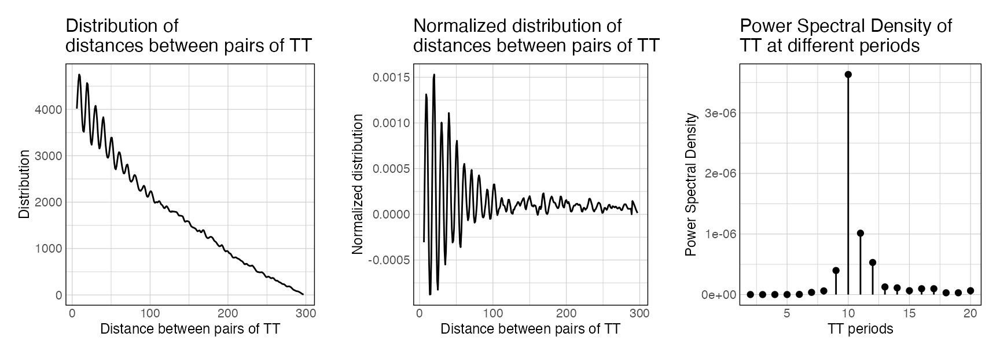

Introduction to periodicDNA
Short DNA sequence motifs provide key information for interpreting the instructions in DNA, for example by providing binding sites for proteins or altering the structure of the double-helix. A less studied but important feature of DNA sequence motifs is their periodicity. A famous example is the 10-bp periodicity of many k-mers in nucleosome positioning (reviewed in Travers et al. 2010 or in Struhl and Segal 2013).
periodicDNA provides a framework to quantify the periodicity of k-mers of interest in DNA sequences. For a chosen k-mer, periodicDNA can identify which periods are statistically enriched in a set of sequences, by using a randomized shuffling approach to compute an empirical p-value. It can also generate continuous linear tracks of k-mer periodicity strength over genomic loci.
Internal steps of periodicDNA
To estimate the periodicity strength of a given k-mer in one or several sequences, periodicDNA performs the following steps:
- The k-mer occurrences are mapped and their pairwise distances are calculated.
- The distribution of all the resulting pairwise distances (also called “distogram”) is generated.
- The distogram is transformed into a frequency histogram and smoothed using a moving window of 3 to mask the universal three-base genomic periodicity. To normalize the frequency for distance decay, the local average (obtained by averaging the frequency with a moving window of 10) is then subtracted from the smoothed frequency.
- Finally, the power spectral density (PSD) is estimated by applying a Fast Fourier Transform (Figure 1F) over the normalized frequency histogram. The magnitude of the PSD values indicates the contribution of a given period to the overall periodicity of the k-mer of interest.

Quantifying k-mer periodicity over a set of sequences
Basic usage
The main goal of periodicDNA is to quantify periodicity of a given k-mer in a set of sequences. For instance, one can assess the periodicity of TT dinucleotides in sequences around TSSs of ubiquitous promoters using getPeriodicity().
In the following example, getPeriodicity() is directly ran using a GRanges object, specifying from which genome this GRanges comes from.
library(ggplot2) library(magrittr) library(periodicDNA) # data(ce11_TSSs) periodicity_result <- getPeriodicity( ce11_TSSs[['Ubiq.']][1:500], genome = 'BSgenome.Celegans.UCSC.ce11', motif = 'TT', BPPARAM = setUpBPPARAM(1) ) #> - Mapping k-mers. #> - 523903 pairwise distances measured. #> - Calculating pairwise distance distribution. #> - Normalizing distogram vector. #> - Applying Fast Fourier Transform to the normalized distogram.
The main output of getPeriodicity() is a table of power spectral density (PSD) values associated with discrete frequencies, computed using a Fast Fourier Transform. For a given frequency, a high PSD score indicates a high periodicity of the k-mer of interest.
In the previous example, TT dinucleotides in sequences around TSSs of ubiquitous promoters are highly periodic, with a periodicity of 10 bp.
head(periodicity_result$PSD) #> freq period PSD #> 1 0.005 200.00000 6.256976e-08 #> 2 0.010 100.00000 2.204282e-08 #> 3 0.015 66.66667 2.215522e-09 #> 4 0.020 50.00000 1.108237e-08 #> 5 0.025 40.00000 4.649689e-09 #> 6 0.030 33.33333 2.661198e-08 subset(periodicity_result$periodicityMetrics, Period == 10) #> Freq Period PSD #> 20 0.1 10 3.633071e-06
Graphical output of getPeriodicity() can be obtained using the plotPeriodicityResults() function:
plotPeriodicityResults(periodicity_result)

The first plot shows the raw distribution of distances between pairs of ‘TT’ in the sequences of the provided GRanges. The second plot shows the decay-normalised distribution. Finally, the third plot shows the PSD scores of the ‘TT’ k-mer, measured from the normalised distribution.
Repeated shuffling of input sequences
periodicDNA provides an approach to compare the periodicity of a given k-mer in a set of sequences compared to background. For a given k-mer at a period T in a set of input sequences, the fold-change over background of its PSD is estimated by iteratively shuffling the input sequences and estimating the resulting PSD values.
Eventually, the log2 fold-change (l2FC) between the observed PSD and the median of the PSD values measured after shuffling is computed as follows:
l2FC = log2(observed PSD / median(shuffled PSDs)).
periodicity_result <- getPeriodicity( ce11_TSSs[['Ubiq.']][1:500], genome = 'BSgenome.Celegans.UCSC.ce11', motif = 'TT', n_shuffling = 5 ) #> - Calculating observed PSD #> - Mapping k-mers. #> - 523903 pairwise distances measured. #> - Calculating pairwise distance distribution. #> - Normalizing distogram vector. #> - Applying Fast Fourier Transform to the normalized distogram. #> - Shuffling 1/5 #> - Shuffling 2/5 #> - Shuffling 3/5 #> - Shuffling 4/5 #> - Shuffling 5/5 #> Only 5 shufflings. Cannot compute accurate empirical p-values. To compute empirical p-values, set up n_shuffling to at least 100. Only l2FC values are returned head(periodicity_result$periodicityMetrics) #> Freq Period PSD_observed l2FC pval fdr #> 1 0.005 200.00000 6.26e-08 -1.37213353 NA NA #> 2 0.010 100.00000 2.20e-08 -1.12754062 NA NA #> 3 0.015 66.66667 2.22e-09 -2.47370908 NA NA #> 4 0.020 50.00000 1.11e-08 0.09044258 NA NA #> 5 0.025 40.00000 4.65e-09 -0.14473772 NA NA #> 6 0.030 33.33333 2.66e-08 0.19102196 NA NA subset(periodicity_result$periodicityMetrics, Period == 10) #> Freq Period PSD_observed l2FC pval fdr #> 20 0.1 10 3.63e-06 8.593242 NA NA plotPeriodicityResults(periodicity_result)

If n_shuffling >= 100, an associated empirical p-value is calculated as well (North et al 2002). This metric indicates, for each individual period T, whether the observed PSD is significantly greater than the PSD values measured after shuffling the input sequences. Note that empirical p-values are only an estimation of the real p-value. Notably, small p-values are systematically under-estimated (North et al 2002).
Note
getPeriodicity() can also be ran directly on a set of sequences of interest as follows:
data(ce11_proms_seqs) periodicity_result <- getPeriodicity( ce11_proms_seqs, motif = 'TT', BPPARAM = setUpBPPARAM(1) ) #> - Mapping k-mers. #> - 117630 pairwise distances measured. #> - Calculating pairwise distance distribution. #> - Normalizing distogram vector. #> - Applying Fast Fourier Transform to the normalized distogram. subset(periodicity_result$periodicityMetrics, Period == 10) #> Freq Period PSD #> 20 0.1 10 1.16806e-06
Track of periodicity over a set of Genomic Ranges
The other aim of periodicDNA is to generate continuous linear tracks of k-mer periodicity strength over genomic loci of interest. getPeriodicityTrack() can be used to generate suck genomic tracks. In the following example,
WW_10bp_track <- getPeriodicityTrack( genome = 'BSgenome.Celegans.UCSC.ce11', granges = ce11_proms, motif = 'WW', period = 10, BPPARAM = setUpBPPARAM(1), bw_file = 'WW-10-bp-periodicity_over-proms.bw' )
When plotted over sets of ubiquitous, germline or somatic TSSs, the resulting track clearly shows increase of WW 10-bp periodicity above the ubiquitous and germline TSSs, whereas somatic TSSs do not show such increase.
data(ce11_TSSs) plotAggregateCoverage( WW_10bp_track, ce11_TSSs, xlab = 'Distance from TSS', ylab = '10-bp periodicity strength (forward proms.)' )

Session info
sessionInfo() #> R version 4.0.2 (2020-06-22) #> Platform: x86_64-pc-linux-gnu (64-bit) #> Running under: Ubuntu 18.04.5 LTS #> #> Matrix products: default #> BLAS: /usr/lib/x86_64-linux-gnu/openblas/libblas.so.3 #> LAPACK: /usr/lib/x86_64-linux-gnu/libopenblasp-r0.2.20.so #> #> locale: #> [1] LC_CTYPE=en_US.UTF-8 LC_NUMERIC=C #> [3] LC_TIME=en_US.UTF-8 LC_COLLATE=en_US.UTF-8 #> [5] LC_MONETARY=en_US.UTF-8 LC_MESSAGES=en_US.UTF-8 #> [7] LC_PAPER=en_US.UTF-8 LC_NAME=C #> [9] LC_ADDRESS=C LC_TELEPHONE=C #> [11] LC_MEASUREMENT=en_US.UTF-8 LC_IDENTIFICATION=C #> #> attached base packages: #> [1] parallel stats4 stats graphics grDevices utils datasets #> [8] methods base #> #> other attached packages: #> [1] BSgenome.Celegans.UCSC.ce11_1.4.2 periodicDNA_0.99.17 #> [3] BiocParallel_1.23.2 BSgenome_1.57.6 #> [5] rtracklayer_1.49.5 Biostrings_2.57.2 #> [7] XVector_0.29.3 magrittr_1.5 #> [9] ggplot2_3.3.2 GenomicRanges_1.41.6 #> [11] GenomeInfoDb_1.25.11 IRanges_2.23.10 #> [13] S4Vectors_0.27.12 BiocGenerics_0.35.4 #> #> loaded via a namespace (and not attached): #> [1] SummarizedExperiment_1.19.6 zoo_1.8-8 #> [3] xfun_0.16 lattice_0.20-41 #> [5] colorspace_1.4-1 vctrs_0.3.4 #> [7] htmltools_0.5.0 yaml_2.2.1 #> [9] XML_3.99-0.5 rlang_0.4.7 #> [11] pkgdown_1.6.0 pillar_1.4.6 #> [13] glue_1.4.2 withr_2.2.0 #> [15] matrixStats_0.56.0 GenomeInfoDbData_1.2.3 #> [17] lifecycle_0.2.0 stringr_1.4.0 #> [19] zlibbioc_1.35.0 munsell_0.5.0 #> [21] gtable_0.3.0 ragg_0.3.1 #> [23] memoise_1.1.0 evaluate_0.14 #> [25] labeling_0.3 Biobase_2.49.1 #> [27] knitr_1.29 scales_1.1.1 #> [29] backports_1.1.9 DelayedArray_0.15.7 #> [31] desc_1.2.0 cpp11_0.2.1 #> [33] farver_2.0.3 systemfonts_0.3.1 #> [35] fs_1.5.0 Rsamtools_2.5.3 #> [37] digest_0.6.25 stringi_1.4.6 #> [39] cowplot_1.1.0 grid_4.0.2 #> [41] rprojroot_1.3-2 tools_4.0.2 #> [43] bitops_1.0-6 RCurl_1.98-1.2 #> [45] tibble_3.0.3 crayon_1.3.4 #> [47] pkgconfig_2.0.3 ellipsis_0.3.1 #> [49] Matrix_1.2-18 assertthat_0.2.1 #> [51] rmarkdown_2.3 R6_2.4.1 #> [53] GenomicAlignments_1.25.3 compiler_4.0.2